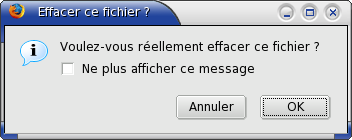
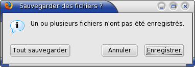

Pour de simples messages d'alerte, il vous suffit d'appeler les fonctions JavaScript alert, prompt et confirm. La fonction alert ne prend qu'un argument, la chaîne de caractères à afficher. Elle affiche une boîte de dialogue avec le message et un bouton OK. La fonction confirm est similaire mais elle affiche en plus un bouton Annuler. La fonction confirm renvoie true si le bouton OK est pressé et false si le bouton Annuler est pressé.
La fonction prompt affiche un champ de saisie, un bouton OK et un bouton Annuler. Elle prend deux arguments, le message à afficher et la valeur par défaut du champ de saisie. La valeur par défaut est optionnelle. La fonction prompt retourne le texte que l'utilisateur a saisi ou null si l'utilisateur a pressé le bouton Annuler.
Quelques exemples :
alert("Ceci est une alerte");
if (confirm("Voulez-vous gagner la partie ?"){
winGame();
}
var name = prompt("Entrez votre nom");
Mozilla fournit également une interface XPCOM, nsIPromptService, qui peut être utilisée dans applications chrome pour des boîtes de messages plus sophistiquées. Vous pouvez toujours créer votre propre boîte de dialogue avec un fichier XUL séparé, mais il est plus pratique d'utiliser le service de messages interne dans la mesure du possible. Le service de messages dispose de plusieurs alertes spéciales que vous pouvez utiliser dont quelques unes sont décrites ci-dessous. Pour les autres, reportez-vous au
code source nsIPromptService.
Les fonctions alert et confirm sont similaires aux fonctions normales sauf que vous pouvez leur affecter un titre de dialogue. Par exemple :
// récupère une référence du composant de service de messages.
var promptService = Components.classes["@mozilla.org/embedcomp/prompt-service;1"]
.getService(Components.interfaces.nsIPromptService);
// affiche l'alerte. Pour le premier argument, la fenêtre parente est fournie.
// Le second argument est le titre du dialogue et
// le troisième argument est le message à afficher.
promptService.alert(window,"Attention","Votre ordinateur va bientôt exploser.");
Deux fonctions similaires, alertCheck et confirmCheck, affichent une boîte de dialogue d'alerte ou de confirmation avec une case à cocher supplémentaire. Elles sont typiquement utilisées pour les options Ne plus afficher ce message.
// récupère une référence du composant de service de messages.
var promptService = Components.classes["@mozilla.org/embedcomp/prompt-service;1"]
.getService(Components.interfaces.nsIPromptService);
// la fonction confirmCheck stockera l'état de la case à cocher
// dans un objet passé en dernier paramètre.
var checkResult = {};
// affiche une boîte de dialogue de confirmation avec une case à cocher.
// Les arguments sont dans l'ordre, la fenêtre parente, le titre du dialogue,
// le message du dialogue, le libellé de la case à cocher et l'objet contenant
// l'état de la case à cocher.
promptService.confirmCheck(window,"Effacer ce fichier ?",
"Voulez-vous réellement effacer ce fichier ?",
"Ne plus afficher ce message",
checkResult);
// si la case à cocher a été pressée, la propriété value sera true,
// donc définissez une variable globale
if (checkResult.value) gDontShowAgain=true;
 Le dernier argument de la fonction confirmCheck est un objet. Lorsque la fonction se termine, la propriété value de l'objet contiendra soit true ou soit false, selon que l'utilisateur ait coché ou non la case. Vous pouvez également lui assigner true avant l'appel de la fonction confirmCheck pour que la case à cocher soit cochée par défaut.
La fonction la plus avancée de boîte de message est la fonction confirmEx qui vous permet également de personnaliser les boutons affichés.
// récupère une référence du composant de service de messages.
var promptService = Components.classes["@mozilla.org/embedcomp/prompt-service;1"]
.getService(Components.interfaces.nsIPromptService);
// définit les boutons qui apparaissent dans la boîte de dialogue.
// Il s'agit d'une série de constantes multipliées par les constantes définissant
// la position des boutons. Dans ce cas, trois boutons apparaissent,
// Sauvegarder, Annuler et un bouton personnalisé.
var flags=promptService.BUTTON_TITLE_SAVE * promptService.BUTTON_POS_0 +
promptService.BUTTON_TITLE_CANCEL * promptService.BUTTON_POS_1 +
promptService.BUTTON_TITLE_IS_STRING * promptService.BUTTON_POS_2;
// affiche la boîte de dialogue. La variable flags définie ci-dessus est passée
// comme quatrième argument. Les trois arguments suivants sont les libellés personnalisés
// utilisés pour les boutons pour lesquels BUTTON_TITLE_IS_STRING a été assigné.
// Les deux derniers arguments servent pour une case à cocher optionnelle.
promptService.confirmEx(window,"Sauvegarder des fichiers ?",
"Un ou plusieurs fichiers n'ont pas été enregistrés.",
flags, null, null, "Tout sauvegarder", null, {});
 Le quatrième argument de la fonction confirmEx définit des drapeaux indiquant quels boutons doivent apparaître dans le dialogue. Jusqu'à trois boutons peuvent être affichés. L'ordre dans lequel ils apparaissent dépend de la plate-forme. Chaque bouton est spécifié avec une constante de titre multiplié par une constante de position.
Si vous utilisez BUTTON_TITLE_IS_STRING, vous pouvez assigner un libellé personnalisé à un bouton. Vous devez passer le libellé comme cinquième, sixième ou septième argument à la fonction confirmEx. Dans le précédent exemple, le texte Tout sauvegarder est attribué au troisième bouton.
Les deux derniers arguments de confirmEx servent pour une éventuelle case à cocher comme décrit plus tôt.